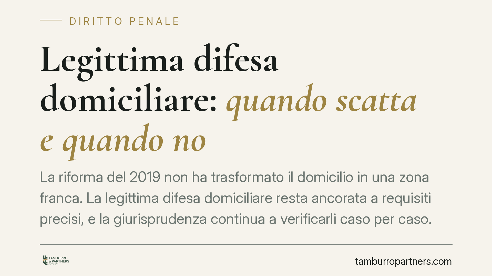

Legittima difesa domiciliare: quando scatta e quando no
La riforma del 2019 non ha trasformato il domicilio in una zona franca. La legittima difesa domiciliare resta ancorata a requisiti precisi, e la giurisprudenza continua a verificarli caso per caso. Capire dove finisce la difesa legittima e dove inizia la responsabilità penale è decisivo per chiunque si trovi a reagire a un'intrusione nella propria abitazione.

Il mito dell'immunità automatica
Dopo la legge 26 aprile 2019, n. 36, si è diffusa un'idea semplificata: chi reagisce contro un intruso nella propria casa sarebbe sempre esente da responsabilità. Non è così. La riforma ha rafforzato alcune presunzioni a favore di chi si difende, ma non ha eliminato i presupposti sostanziali della scriminante. Il giudice continua a verificare se la reazione fosse davvero necessaria e legittima.
Inquadramento normativo
La legittima difesa è disciplinata dall'art. 52 del codice penale. Il primo comma detta la regola generale: non è punibile chi ha commesso il fatto per esservi stato costretto dalla necessità di difendere un diritto proprio o altrui contro il pericolo attuale di un'offesa ingiusta, sempre che la difesa sia proporzionata all'offesa.
Il secondo e il terzo comma – modificati nel 2006 e nel 2019 – introducono una presunzione di proporzionalità quando l'aggressione avviene nel domicilio o nei luoghi assimilati (esercizio commerciale, studio professionale). In presenza di violazione di domicilio, la legge presume sussistente il rapporto di proporzione se chi si difende usa un'arma legittimamente detenuta per tutelare l'incolumità propria o altrui, oppure i beni, quando non vi è desistenza e vi è pericolo di aggressione.
Il quarto comma, aggiunto nel 2019, estende la presunzione ai casi di intrusione commessa con violenza alle persone, con minaccia di armi o da più persone.
Un chiarimento necessario sul termine «sempre». La parola compare nel secondo comma dell'art. 52 c.p. ("agisce sempre in stato di legittima difesa") e si riferisce esclusivamente alla presunzione di proporzionalità, non a un'immunità generalizzata. Restano cioè da accertare gli altri presupposti: l'attualità del pericolo, la necessità della reazione e l'ingiustizia dell'offesa.
Va poi tenuta distinta un'altra previsione, spesso confusa con l'art. 52. La causa di non punibilità per grave turbamento introdotta dalla L. 36/2019 non è collocata nell'art. 52, bensì nell'art. 55, secondo comma, c.p., in tema di eccesso colposo. La norma esclude la punibilità di chi, trovandosi nelle condizioni dell'art. 52, commi 2, 3 e 4, abbia ecceduto i limiti della difesa agendo in stato di grave turbamento, derivante dalla situazione di pericolo in atto. È un correttivo che interviene solo quando la difesa ha già superato i limiti: non è una scriminante autonoma, ma una causa di esclusione della colpa nell'eccesso.
Cosa cambia nella pratica
Le presunzioni dell'art. 52 c.p. spostano l'equilibrio a favore di chi si difende, ma non azzerano l'accertamento giudiziale. La giurisprudenza di legittimità è costante nel ribadire che i requisiti restano cumulativi:
- attualità dell'aggressione: il pericolo deve essere in corso o imminente, non passato né meramente temuto;
- animus defendendi: la finalità dell'azione deve essere difensiva, non ritorsiva o punitiva;
- necessità e, ove non operi la presunzione, proporzione tra l'offesa subita e la reazione.
Se l'aggressore è in fuga, se il pericolo è cessato, o se la reazione risponde a un intento di vendetta, la scriminante non opera e può configurarsi un reato. La presunzione domiciliare, inoltre, presuppone comunque che l'arma sia legittimamente detenuta e che vi sia un'effettiva situazione di pericolo per le persone.
La Cassazione ha più volte precisato che la sola presenza di un intruso nel domicilio non legittima qualsiasi reazione: occorre valutare in concreto la dinamica dei fatti. Si suggerisce prudenza nel leggere i titoli di cronaca, spesso costruiti su semplificazioni che la motivazione delle sentenze smentisce.
Cosa fare in concreto
- Reagisci solo a un pericolo attuale: se l'intruso è in fuga o il pericolo è cessato, l'azione non è più difensiva.
- Verifica la regolarità dell'arma: la presunzione di proporzionalità opera solo con arma legittimamente detenuta.
- Chiama immediatamente le forze dell'ordine e, se possibile, mettiti in sicurezza prima di qualsiasi reazione.
- Non alterare lo stato dei luoghi dopo l'evento: la ricostruzione della dinamica sarà decisiva nell'accertamento.
- Attiva subito un difensore: in caso di indagine, le dichiarazioni iniziali orientano l'intera valutazione sulla legittimità della condotta.
Conclusione
La riforma del 2019 ha ampliato le tutele di chi si difende in casa, ma non ha creato alcuna automatica impunità. La differenza tra difesa legittima e responsabilità penale si gioca sui dettagli della singola vicenda. Per questo ogni caso va esaminato nella sua concretezza, senza affidarsi a formule generiche.
Contributo informativo a cura di Tamburro & Partners Avvocati – Avv. Giuseppe Tamburro. Non costituisce parere legale.
Ogni condominio ha una storia a sé.
Se gestisci un'amministrazione e vuoi un confronto su una specifica questione condominiale, scrivi allo studio. Ti rispondiamo entro un giorno lavorativo.